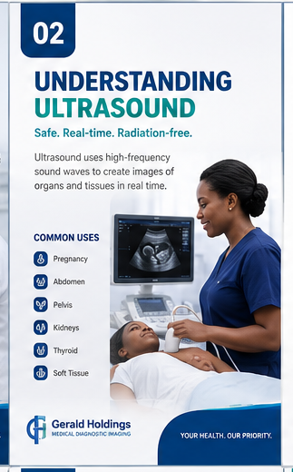
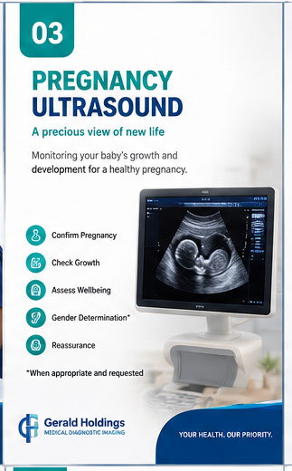
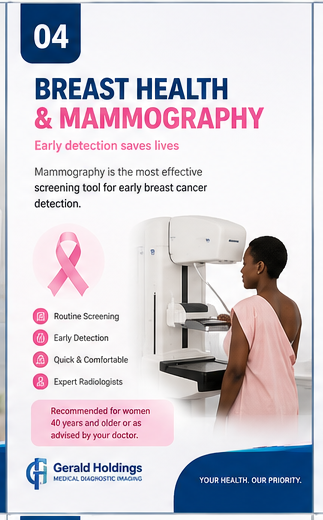
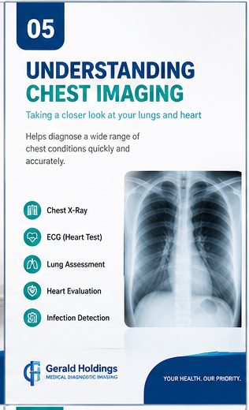
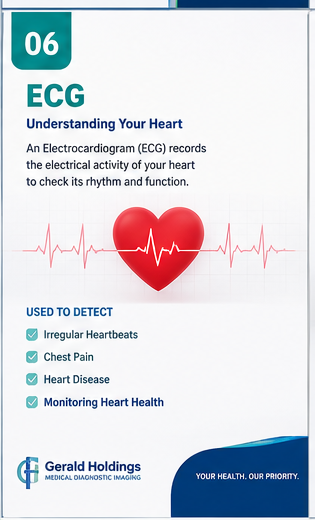
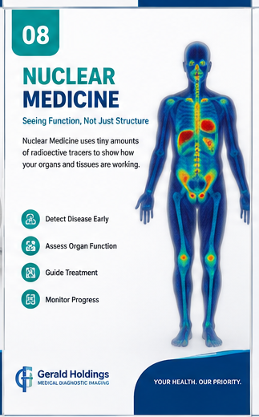

Licensed to See the Unseen
An overview of diagnostic imaging technologies and how radiologists visualise internal structures.
PATIENT EDUCATION • IMAGING PREPARATION • FAQS
Clear preparation guidance for MRI, CT, ultrasound, mammography, digital X-ray and dental imaging…
Ten illustrated guides covering every modality — from ultrasound to nuclear medicine. Swipe, drag, or use the controls below.
An overview of diagnostic imaging technologies and how radiologists visualise internal structures.

How high-frequency sound waves create real-time dynamic images of soft tissues without radiation.

Milestones and safety information for obstetric ultrasound examinations during pregnancy.

Important facts about early detection, screening recommendations, and mammogram preparation.

What X-rays and CT scans reveal about cardiac and pulmonary health.

How electrical signals of the heart are mapped to assess cardiac rhythm and cardiovascular health.
Understanding cross-sectional imaging, multi-planar reconstructions, and scan preparation.

How radiotracers highlight physiological processes at the cellular and molecular level.
A comprehensive checklist for fasting, contrast instructions, and metal safety guidelines.

The journey of your scan from raw data acquisition to expert radiologist reporting.
PREPARATION GUIDES
Your booking confirmation may contain protocol-specific instructions. If those instructions differ from those below, follow the booking confirmation.
SAFETY FIRST
MRI does not use ionising radiation, but the strong magnetic field requires careful screening.
When contrast or ionising radiation is clinically indicated, protocols are selected around the real benefit to you.
FORMS & CHECKLISTS
Print all modality checklists from this page for your appointment folder.
Print this page →Consent requirements vary by examination and contrast use. Request the current form from reception.
Request by email →Ask the radiography team about the protocol, benefits, alternatives and dose optimisation.
Contact the centre →FREQUENTLY ASKED QUESTIONS
Routine reports are generally targeted within 24 hours and urgent cases are prioritised. Actual turnaround depends on examination type and referral urgency. Ask reception at the time of booking.
Most imaging examinations require a referral from a doctor, specialist, or dentist so that the appropriate protocol can be selected and results reported meaningfully. Contact us if you are unsure.
MRI uses no ionising radiation and is safe for most patients. The strong magnetic field requires careful safety screening for metal implants, devices, and pregnancy. Always complete the MRI safety questionnaire before your scan.
We accept cash, card, and major medical aid schemes. Contact reception to confirm whether your specific scheme is currently on our accredited list before your appointment.
Reports are sent to your referring doctor. Copies can be collected from reception or requested by email. Visit the Patient portal for more options.
We are located at Unit 20/23, KB Mall, G-West Industrial, Gaborone. View directions on the Contact page.
Contact reception with the name of your examination and preferred appointment date. The team will confirm the correct preparation instructions.
BOOK OR SEND AN ENQUIRY